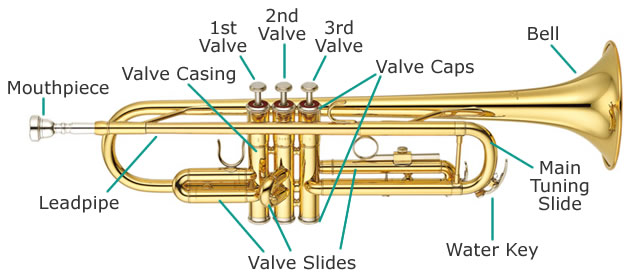
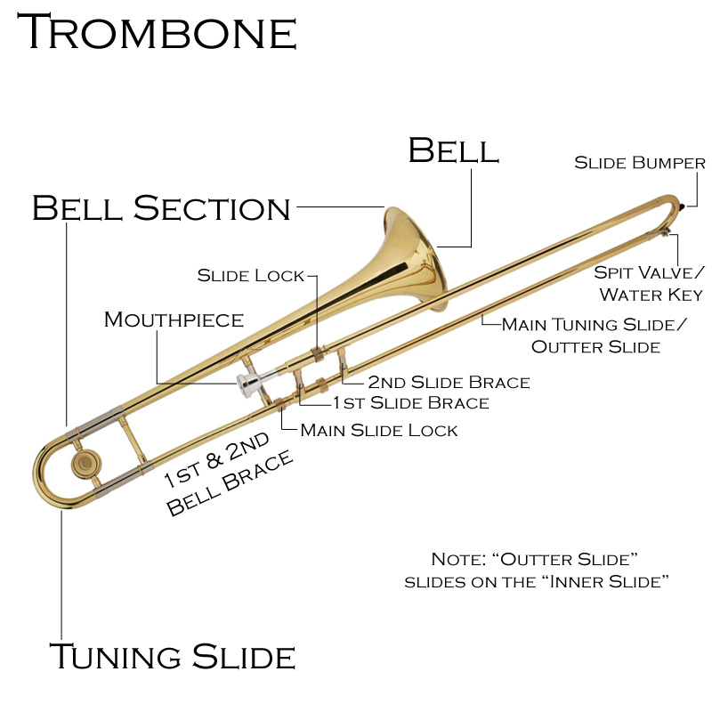
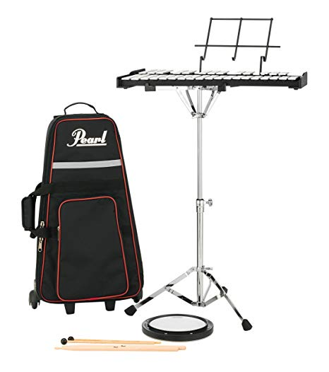

Assembly For Alto Saxophone
An Alto Saxophone Assembly is really easy once you get the hang of it. The assembly will roughly take around 5 minutes once you have done this for awhile.
Step 1: Neckstrap
Step one is getting the instrumet out of the case and putting on the neckstrap.
You want to attach the neckstrap to a little loop that's on the Saxophone as shown in the picture provided.
Once you have the neckstrap attached to the Alto Saxophone, then you can put it around your neck.
You can do this step Vise Versa, meaning oppisite, or however you find it easier.
Step 2: Neck
Once you have the body of the Alto Saxophone attached and is around your neck, you want to carefully take out the neck of the instrument.
This piece could easily bend and break, so be very careful when you attach it.
You want to take the neck of the instrument and attaach it to the top of your Saxophone. There is a little screw off to the side that you must loosen first.
Once you attach the neck, tighten the screw back up. If you don't, the neck could easily de-attach from the instrument doing rehearsel or during a performance.
Step 3: Mouthpiece, Ligature, and Reeds
Get your mouthpiece, ligature, and box of reeds out of your case, and the cork grease.
Apply the cork grease to the cork of the neck.
Once that is applied, you can easily get the mouthpiece on.
Once you get the mouthpiece on in the required spot it needs to be, then you can put the reed on.
Usually beginner reeds start at 2.0 strength.
You only need one reed.
Aline the reed to the center of the reed. The video provided will explain this step in further details.
Now, untighten the ligature and carefully slide your ligature over the reed and mouthpiece.
You want to be careful, because you can split your reed by hitting the ligature against the reed.

Assembly For Trumpet
The Trumpet only has 2 pieces to put together. It is one of the easiest instruments for quick and easy assembly, but very complicated to learn.
All you need to do is take the body out of the case, and attach the mouthpiece.
If your valves are tough to push down, or they are sticking, then you need to use your valve oil.
The vavle oil helps loosen the buttons so they won't stick.
Assembly For Flute
The Flute is also very easy to assemble, but very complicated to learn.
It is simply three attachments, but you have to be very gentle and careful.
You have to make sure the attachments are aligned correctly, or else you could bend a piece of your instrument.
Then you have to adjust your headjoint to the position for you to be able to play it.
Assembly For Clarinet
This instrument is going to be in steps just like the Alto Saxophone, for this instrument has many pieces.
Step One: Attaching The Upper And Lower Tubes
First, you want to take the upper and lower tubes out of the case.
Before you attach your Upper and Lower Tube, apply a bit of cork grease.
You want to carefully allign and attach these pieces together.
If they are not alligned properly, then you risk breaking your instrument.
Step 2: Attaching The Bell
Next, you want to take out the bell and carefully attach it to the lower tube.
You want to make sure the brand name of the Clarinet is facing outward/the front of the instrument.
Step 3: Attaching The BarrelLigature, Mouthpiece, And Reed
Next, you want to get your mouthpiece and barrel out of the case.
Apply cork grease to the cork at the top of the Upper Tube.
Carefully put the barrel on the top of the Upper Tube.
Now, allign your reed with your mouthpiece and slide the ligature over both of them.
You want to make sure that you loosen the screws on the ligature.
Omce you have the ligature over both the moughtpiece and the ligature, tighten up the screws.
Next, apply cork grease to your mouthpiece.
Like the Alto Saxophone mouthpiece, this will help it not get stuck, or too difficult to put on.
Once you have that done, you are ready to play!

Assembly For Trombone
This instrument doesn't require much time to put together.
It is a quick instrument to put together and a bit easy to learn.
First, you want to take out the Bell Section of the instrument.
The tuning slide should already be attached to the trombone.
Next, you want to take out the slide, or as some call in, the main tuning slide.
Simply slide on the main tuning slide over the inner slide.
Finally, attach your mouthpiece and you are set!

Bell Kits
Bell Kits are a bit difficult to set up. So read these steps to help you out!
Step One: Bell Stand
When you open your case, first take out the bell kit stand.
This will hold your Xylophone and Drum Pad.
Adjust the screws so that you can extend the legs of the stand, and so you can adjust the height.
Tighten up the screws once you get it to where you need it to be.
Step 2: Placing On The Xylophone Or Drum Pad
You want to center your drumpad or Xylophone on your stamd. This should be easy to do.